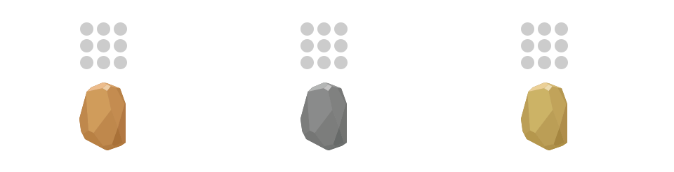

trove
troveWe do not remember days.
We remember moments.
Trove is for moments worth sharing.
Trove is a platform through which digital goods can be stored in physical space.
These goods can only be acquired in exchange for new goods, such as images, soundbytes, or even money.
Trove takes advantage of Bluetooth technology using Estimote Beacons. It connects an external server to a local beacon, turning the beacons into digital boxes.
